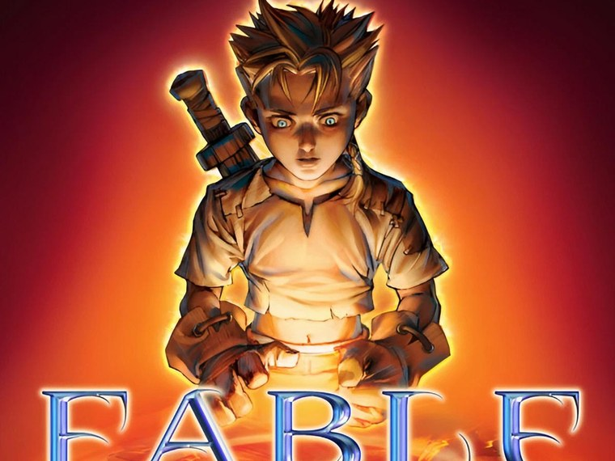
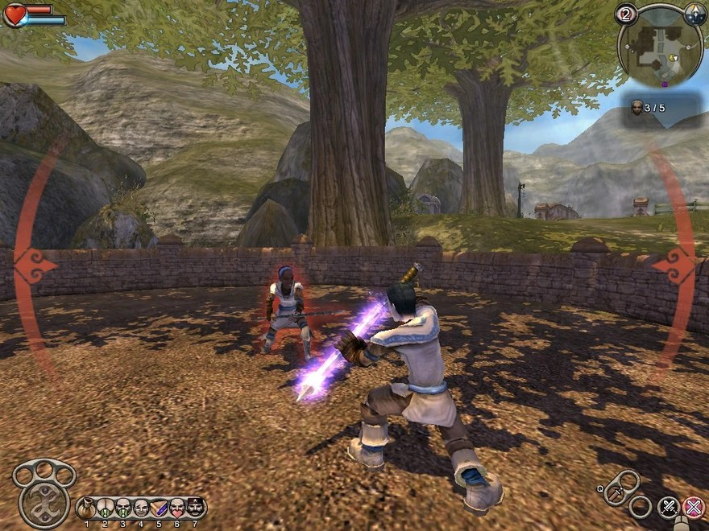
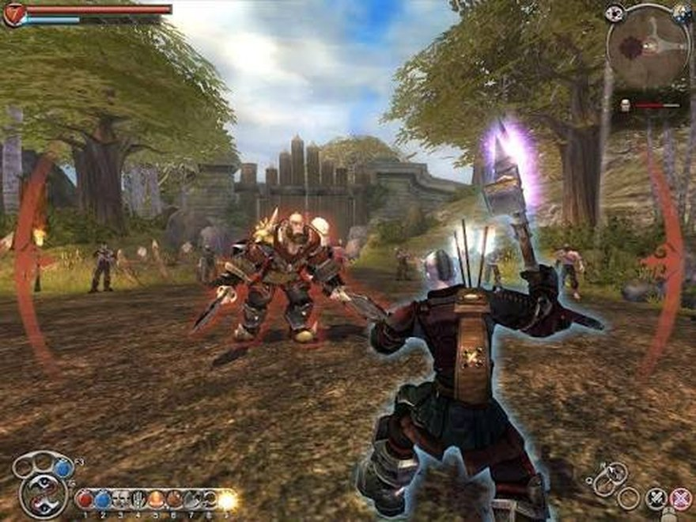
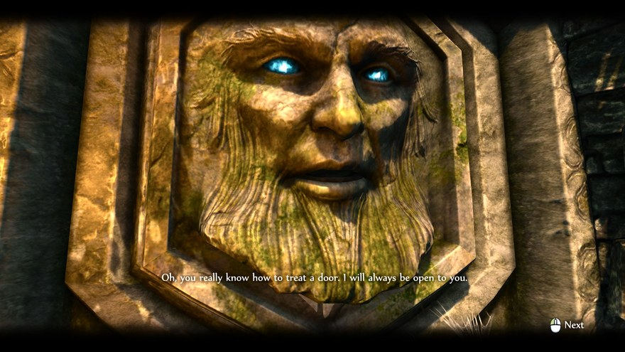

Trước khi chơi Fable, tớ đã "chơi" nó suốt gần hai năm — trên giấy.
Hồi lớp 8, lớp 9, tài sản quý nhất của tớ và ông anh hàng xóm (vẫn là ổng, ông anh trong bài Grandia II ấy) là mấy cuốn Thế Giới Game mười nghìn một cuốn — thời đó là cả một khoản đầu tư, nên mỗi cuốn được đọc kỹ tới mức gáy báo mòn ra. Trong một số báo năm đó có bài giới thiệu Fable — tựa game đang làm mưa làm gió trên Xbox, hệ máy mà cả cái xóm tớ không ai có. Nhà ổng có máy tính, nhưng Xbox thì chịu. Thế là hai anh em chỉ còn một cách duy nhất để "chơi" Fable: đọc.
Mà đọc thật. Đọc đi đọc lại tới mức thuộc lòng. Game gì mà nhân vật già đi theo thời gian. Game gì mà làm việc tốt thì mọc hào quang, làm việc xấu thì mọc sừng. Game gì mà cưới vợ mua nhà được. Hai đứa ngồi tưởng tượng đủ kiểu — nếu được chơi thì mày theo thiện hay ác, tao sẽ mua căn nhà ở đâu — như thể bàn chuyện chia đất ở một thế giới mà cả hai chưa từng đặt chân đến.

Rồi Fable lên PC. Trời ơi cái ngày biết tin đó.
Vấn đề duy nhất: máy nhà ông anh thuộc dạng mà quạt kêu to hơn loa. Fable chạy trên đó theo đúng nghĩa "trình chiếu slide" — giật, nhòe, đơ đủ kiểu. Nhưng khát khao hai năm trời không cho phép hai đứa bỏ cuộc dễ vậy. Cứ lết. Giật cũng lết. Load năm phút cũng lết.
Cho đến một ngày game crash hẳn, không cứu được nữa. Hai anh em ngồi nhìn cái màn hình đen, không đứa nào nói gì. Kiểu im lặng của những người vừa bị đá khỏi thiên đường khi mới đi được nửa đường.
Chuyện đổi khác vào năm lớp 10, khi tớ vượt qua kỳ thi học kỳ với thành tích đủ để ba mẹ giữ lời hứa: mua cho một cái máy tính. Cái máy đó về sau gánh không biết bao nhiêu game — trong đó có cái Tết Grandia II mà tớ từng kể, nhưng đó là chuyện của mùa xuân năm sau — còn mùa hè đầu tiên này, nó thuộc về Fable.
Và mùa hè đó thuộc dạng hè đẹp nhất thời đi học của tớ. Ngày nào ông anh cũng qua. Hai đứa thay phiên — đứa cầm chuột, đứa ngồi cạnh chỉ đạo, mà thường chỉ đạo to mồm hơn người chơi. Thời đó làm gì có walkthrough, không Google, không YouTube — cả thế giới Albion là một tấm bản đồ trắng để hai đứa tự mò. Phát hiện ra mua được nhà: la làng. Phát hiện ra cưới được vợ: la làng to hơn. Phát hiện ra tặng quà nhiều thì dân làng đổ ầm ầm: cả hai cười muốn sập nhà.
Fable mở đầu bằng một trong những màn dạo đầu đáng nhớ nhất thời đó. Bạn là một cậu nhóc ở làng Oakvale, đang lo chuyện rất trẻ con: kiếm vài đồng mua quà sinh nhật cho chị gái. Game cho bạn làm việc tốt hoặc việc xấu ngay từ những đồng tiền đầu tiên đó — trông coi hàng giúp người ta đàng hoàng, hay vừa trông vừa thó đồ.
Rồi ngay trong đêm đó, mọi thứ sụp đổ. Làng bị cướp tấn công, gia đình tan nát, và cậu nhóc được một Hero già cứu về Heroes Guild — nơi đào tạo anh hùng của Albion. Từ đây game nhảy qua nhiều năm: bạn lớn lên, học nghề, và bước ra thế giới với một mối thù âm ỉ chưa bao giờ tắt.
Cốt truyện Fable không dài, không nhiều twist chồng chéo — nhưng nó có đúng thứ một câu chuyện cổ tích đen cần: mất mát mở đầu, hành trình trưởng thành, và một kẻ thù xứng tầm mà tớ sẽ không nói tên. Hồi đó hai anh em chơi tới mấy đoạn hé lộ về quá khứ mà ngồi bàn tán như bàn phim truyền hình — "ê tao nghi con này chưa chết", "thằng đó chắc chắn có vấn đề". Có những đoạn nghi đúng, có những đoạn game lừa cho một cú đau điếng. Ai chưa chơi thì tớ giữ nguyên cái quyền được lừa đó cho bạn.
Chính hệ thống thiện–ác của game suýt làm hai anh em... nghỉ chơi nhau. Ổng theo phe ác — "chơi ác mới vui, mọc sừng nhìn ngầu" — còn tớ thích thiện. Cãi nhau chí chóe mỗi lần tới lượt đứa này mà đứa kia đòi hướng khác.
Nhưng mà, máy của tớ mà. Nên ban ngày nhân vật sống hai mặt theo kiểu thỏa hiệp, còn tối đến, khi ổng về rồi, tớ lén mở game làm vài việc tốt — cho cái vòng hào quang trên đầu nó sáng lên. Nhìn cho đẹp. Ổng mà biết chắc từ mặt tớ luôn.
Hệ thống nhân vật của Fable gói trong ba chữ: Strength, Skill, Will — cơ bắp, thiện xạ, phép thuật. Nghe thì giống mọi RPG trên đời, nhưng cái khác nằm ở chỗ Fable không bắt bạn chọn class từ đầu rồi chịu trận tới cuối game. Đánh kiếm nhiều thì Strength lên, bắn cung nhiều thì Skill lên, xài phép nhiều thì Will lên — nhân vật thành ra đúng cái kiểu bạn chơi, chứ không phải cái ô bạn lỡ tick lúc tạo nhân vật.
Kinh nghiệm trong game hiện nguyên hình là mấy quả cầu xanh xanh nảy ra từ xác địch, kèm combat multiplier — đánh liên tục không dính đòn thì nhân hệ số, càng liều càng giàu kinh nghiệm. Đơn giản, trực quan, nhìn phát hiểu liền. Với hai thằng nhóc mà vốn tiếng Anh chủ yếu học từ... chính game, thì độ dễ tiếp cận đó là cứu tinh: không cần đọc hiểu bảng chỉ số dày như sách giáo khoa, cứ chơi là tự khắc mạnh lên theo hướng của mình.

Và đó cũng là triết lý chung của cả game — kể cả hệ thống thiện–ác. Không có thanh đạo đức ẩn nào phải dò, không có bảng hệ quả nào phải tra. Làm việc tốt: dân làng vây quanh, đầu mọc hào quang. Làm việc xấu: ruồi bay quanh người, ai thấy cũng né. Đạo đức trong Fable không phải con số — nó hiện lên trên mặt nhân vật, và chính vì thấy được, sờ được nên nó mới khiến hai đứa nhóc cãi nhau hăng đến thế.
Năm đó, Fable đẹp tới mức tớ nhớ cảm giác đứng ở Oakvale lúc hoàng hôn mà không muốn bấm đi tiếp. Ánh sáng ấm như tranh vẽ, cây cối rợp bóng, cả Albion như bước ra từ sách cổ tích Anh — mà là bản sách in màu xịn. So với mặt bằng game cùng thời trên PC nhà tớ, Fable thuộc hạng "khoe với đứa khác trong xóm được". Đồ họa của nó không chạy theo tả thực, mà chạy theo chất cổ tích — và chính vì thế mà giờ nhìn lại vẫn không thấy lỗi thời như nhiều game "tả thực" cùng năm.

Rải rác khắp Albion là những cánh cửa đá biết nói, gọi là Demon Door. Mỗi cánh giữ một kho báu, và chỉ mở khi bạn làm đúng yêu cầu của nó — mà yêu cầu thì oái oăm đúng kiểu "ai nghĩ ra cái này chắc vui tính lắm": cánh thì đòi bạn ăn cho béo ú ra nó mới thèm nói chuyện, cánh thì bắt mặc đúng bộ đồ nó thích, cánh thì đòi chứng kiến một màn combat đủ đẹp, có cánh còn đòi... quà.
Giờ thì mấy cái này Google phát ra hết. Nhưng hè năm đó không có walkthrough, hai anh em đứng trước mỗi cánh cửa như đứng trước câu đố nhân sư — thử đủ trò, biểu cảm nào cũng diễn, đồ nào cũng thay. Có cánh mở được thì hét ầm nhà. Có cánh chịu chết, đánh dấu trong đầu, để đó "bữa nào quay lại tính sổ". Nghĩ lại, mấy cánh cửa trời đánh đó chiếm của hai đứa cả chục buổi chiều — và đó lại là những buổi chiều nhớ nhất.
Sau này tớ mới biết đằng sau Fable là cả một câu chuyện dở khóc dở cười của làng game.
Cha đẻ của nó, Peter Molyneux của Lionhead Studios, là bậc thầy của môn "hứa trước quên sau". Từ năm 2001 ông đã tuyên bố Fable sẽ cách mạng hóa thể loại RPG — cây cối lớn lên theo thời gian thật, con cái nhân vật chính đóng vai trò trong cốt truyện, đủ thứ. Đến khi game ra năm 2004, một đống tính năng đó không tồn tại, và Molyneux phải đăng đàn xin lỗi công khai. Chuyện hiếm có trong ngành.
Nhưng cái hay là: dù thiếu những lời hứa đó, Fable vẫn bán hơn một triệu bản tuần đầu — vì bản thân game quá có duyên. Albion không rộng như lời đồn, nhưng nó sống: dân làng nhớ mặt bạn, trầm trồ khi bạn làm anh hùng, bỏ chạy khi bạn mọc sừng. Hai thằng nhóc cãi nhau chí chóe vì hướng thiện ác là bằng chứng sống cho thiết kế đó.
Đây là phần cho bạn nào muốn chơi Fable ngay hôm nay, vì bản gốc giờ khó kiếm rồi.
Fable Anniversary là bản remaster 2014, và số phận nó khá giống trò đùa: hình ảnh và âm thanh làm lại toàn bộ, hệ thống ánh sáng mới, texture mới — nghe ngon lành — nhưng lúc mới ra mắt, bản PC bị ném đá tơi bời vì menu không điều khiển được bằng chuột, không đổi được phím, tụt khung hình. Đúng chất game gắn với tuổi thơ tớ: lên PC lần nào cũng trầy trật lần đó.
Tin tốt là các bản patch sau đã sửa kha khá, và giờ game đang được đánh giá Very Positive trên Steam. Kinh nghiệm rút từ cộng đồng: chơi bằng tay cầm — game sinh ra cho Xbox, cắm controller vào là mọi phiền toái về điều khiển biến mất gần hết. Bản Anniversary cũng gồm sẵn toàn bộ nội dung The Lost Chapters, tức bản đầy đủ nhất của game. Được cái hay giảm giá sâu, canh sale mà múc.
Chấm nhanh bản Anniversary: đồ họa đẹp lên rõ, nội dung nguyên vẹn, điều khiển PC vẫn hơi khó chịu nếu dùng chuột phím. Nhưng để bước vào Albion hôm nay thì không có cửa nào tốt hơn.
Nghĩ lại, Fable có lẽ là game duy nhất mà tớ yêu theo đúng trình tự ngược đời: thuộc lòng trước, thất bại giữa chừng, rồi mới được chơi trọn vẹn. Gần hai năm chỉ được "chơi" qua mấy trang báo — có khi chính vì vậy mà mùa hè lớp 10 đó mới ngọt đến thế.
Ông anh hàng xóm giờ mà đọc được bài này, chắc sẽ biết luôn cái bí mật hai mươi năm: thằng em mày lén chơi thiện mỗi tối đó. Xin lỗi nha, nhưng cái vòng sáng đẹp thật mà.
Fable Anniversary hiện có trên Steam, đã gồm toàn bộ nội dung The Lost Chapters. Nhớ hai điều: canh sale, và cắm tay cầm vào. Còn vụ chơi thiện hay ác thì... đừng cãi nhau với đứa ngồi cạnh, máy của ai người đó quyết.